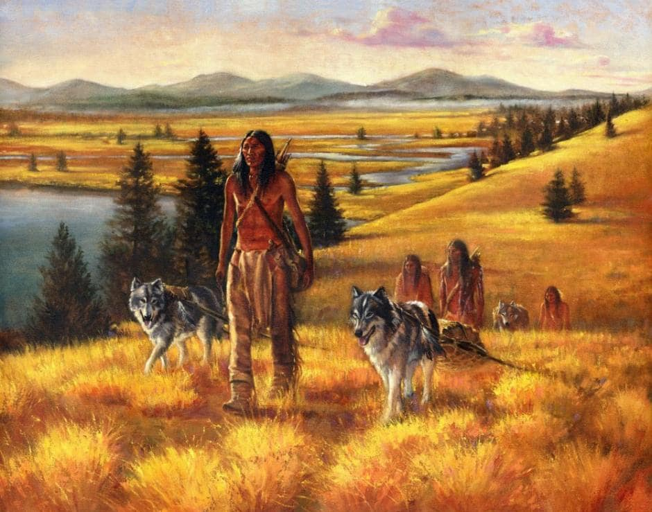

Породы собак 2 странциа
Самые большие породы
Историки определяют две теории происхождения питомцев — монофилетическую и полифилетическую. Сторонники монофилетической теории уверены, что собака произошла от дикого волка. Главный аргумент сторонников этой теории заключается в том, что строение черепа и внешность собак многих пород имеют много сходства с волками.
Полифилетическая теория говорит о том, что собаки появились в результате скрещивания волков с койотами, шакалами или лисицами. Некоторые эксперты склоняются именно к происхождению от некоторых видов шакалов. Есть и усреднённая версия: австрийский учёный Конрад Лоренц опубликовал монографию, где говорится о том, что собаки произошли и от волков, и от шакалов. По мнению зоолога, все породы можно разделить на «волчьи» и «шакальи». Чарльз Дарвин же считал, что именно волки стали прародителями собак. В своей работе «Происхождение видов» он писал: «Отбор их [собак] проходил по принципу искусственному, ключевой силой отбора становились люди, похищавшие волчат из логова и после приручавшие их». Одомашнивание диких предков собак повлияло не только на их поведение, но и на внешний вид. Например, люди чаще всего хотели сохранить положение ушей животного в висячем состоянии, как у щенков, а потому выбирали более инфантильных особей.
Жизнь рядом с человеком повлияла и на цвет глаз собак. У хищников обычно светлые глаза, поскольку они охотятся ночью. Животное же, находясь рядом с человеком, чаще всего вело дневной образ жизни, что и привело к потемнению радужки. Разнообразие пород современных собак некоторые учёные объясняют близкородственным скрещиванием и дальнейшим отбором со стороны человека.